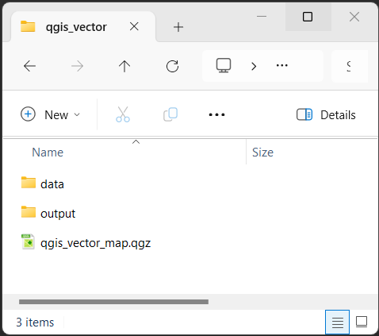

QGIS: Vector Analysis
What is Vector Data?
Vector data is made up of points, lines, and/or polygons. They are made up of precise points with individual coordinates. Vector data is best contrasted with Raster data which has a grid of values evenly spaced apart, connected to one coordinate. Rasters are efficient at displaying large amounts of data, where vector data is very precise.
The Map School has some useful explainers of what Vector data is.
What are we doing today?
To look at vector data, we’re going to use the example of koala populations and protected areas, and use some analyses to see how they interact. The QLD Government has set koala protection as a priority for the State, but how do their priorities match up with the data? We can use QGIS and spatial analysis to ask questions of the data.
Setting Up
This is an intermediate level tutorial. Before completing this tutorial, we recommend our QGIS: Introduction to Mapping tutorial. This tutorial is designed for QGIS 3.40. If you need to install it on your computer, go to the QGIS website.
We will start as always by creating a good folder structure to work within. This folder is where our project, our data, and creations will live. Folder structure is very important for keeping your data tidy, as well as for ease of sharing your project with others. You simply need to zip the project folder if you need to share the whole thing.
Open QGIS and create a new project with
Project > New.Let’s now save our project:
Project > Save.Create a new folder, let’s call it “qgis_vector”.
Inside that folder, create these folders:
“data” - for all the data we will use to make our maps, split into:
“raw” - raw data from your research or the internet
“processed” - any data you’ve modified
“output” - for any maps or images we export
“temp” - this isn’t necessary, but when you’re playing around and testing, it stops things getting messy.
Finally, let’s save our .qgz project file here, named “qgis_vector_map.qgz”

Your .qgz file should always be in the highest level folder, so it’s only looking down into folders for data, not back out.
This might seem unnecessary now, but things quickly get out of control and hard to find if you don’t have a good folder structure.
Let’s finally add an OpenStreetMap basemap to locate ourselves on the globe:
Browser panel > XYZ Tiles > OpenStreetMap(double-click, or drag and drop into the Layers panel).
Gather some data
We’re going to explore a number of different online spatial data repositories. Please download the full dataset here, and extract it into the qgis_vector folder you created earlier.
I will quickly show you where all of this data came from.
Online Community Spatial Repositories
Koala Sighting Data (encounters)
If we’re looking at Koalas, we should get some occurence/sighting data.
We’re getting our species observation data today from the Atlas of Living Australia. This is an Australia Biodiversity occurrence database. It pulls data from a variety of different sources, including government data, individual collectors and community groups. This means that this data will contain sampling bias and will often simply represent encounters, rather than using robust sampling and collection methods. So, while we need to use this data with caution, it’s still a useful dataset!
You need to create an account and request the exact dataset you need, so to speed things up today, we’ve provided the data already cleaned and processed the data in the download link above.
Some similar online repositories include the Global Biodiversity Information Facility (GBIF) and iNaturalist
Cleaning and processing the ALA data
What do we mean by processed? Well, the ALA dataset has 206 columns by default. This means that each occurrence has 206 associated cells, and when multiplied by ~200,000 sightings, our data gets huge (>300mb!). To save time (and storage space!) today we have already deleted 200 of those columns (bringing the dataset down to 15mb).
QLD Government Spatial Data
We’ve seen the QSpatial data portal in previous sessions, and today we will be getting two lots of data from here.
Koala Priority Areas
Koala Priority Areas are areas in SEQ which have been identified as key areas for conservation as part of the South East Queensland Koala Conservation Strategy 2019-2024. You can search for “Koala Priority Areas” in QSpatial, or by going directly to the data.
Let’s get a resource to compare with these QLD government priority areas…
Federal Environment Data
Protected Areas
The Federal Environment Department has a variety of different spatial datasets that you can browse through. Today we are going to be using the Collaborative Australian Protected Areas Database (CAPAD) 2020, which is a compilation of government, Indigenous and privately protected areas for Australia. You can search for “CAPAD” in on the Environment Department website, or by going directly to the data.
Finally let’s get some data to put all of our protected areas and observations into context…
Australian Bureau of Statistics Data
The ABS is a huge source of data, however, it can be a bit difficult to find that data, and use it in a spatial context.
Digital Boundary Files - SA2 - Suburb data
The ABS has a variety of ways that it splits its data up. These Digital Boundary Files are very useful for classifying data. They generally classify all of Australia into discrete Statistical Areas. Level 1 are the smallest, and Level 4 are the coarsest. (notably, the link above also has non-ABS Structures/boundary files such as Electoral areas and Postcodes). Today we are going to use the Statistical Area 2 data, which effectively represent suburbs, but we can take it a little further with more ABS data.
Population Data
The ABS have a lot of useful data, today we will be using their population data. They provide it in excel format, as GeoPackages (by SA2 and LGAs), and as population grid raster files. Today we will be using their SA2 GeoPackages. This means we have our digital boundaries, and population in one!
In the zip file of today’s data we have already trimmed it down to just QLD to save on file size
Data Summary
You should have:
- Point data for analysis
- Koala Sightings
- Boundary Files to spatially categorise our data
- Koala Priority Areas
- Protected Areas
- SA2 Areas (with human population)
Set the Project Projection
We need to choose the projection for our current session of QGIS. Today we will be focusing on South East Queensland (SEQ), so we will choose GDA2020 / MGA zone 56. We will go into projections in more detail soon.
- Go to
Project > Propertiesselect the CRS tab. - In the filter section, type “GDA2020 56”
- From the Coordinate Reference System list, select
EPSG:7856 - GDA2020 / MGA zone 56
You will notice that the OpenStreetMap basemap looks very warped, except for the East Coast of Australia. This is because the projection we have selected is very focused on reducing distortion within the bounds of the projection’s area (Eastern Australia).
Load in our data
For most of our data, we will simply be able to double click on it in the Project Home folder within the Browser window. When you load in this data, QGIS will give you a warning that your Project Projection is different to the data you’re importing. Simply click cancel on this window. We will be fixing this issue later. Make sure your Project Projection remains as EPSG:7856.
Load in:
SA2_ERP_2021_QLD.gpkg (suburb data)
CAPAD2020_terrestrial_QLD.gpkg (Protected Areas)
koala_priority_area.gpkg
But what about the Koala Encounters location data? We need to handle this differently, as it is currently not in a spatial format, but in a csv file.
Importing CSV data
- Go to
Layer > Add Layer > Add Delimited Text Layer... - Click the three dots
...next to the File name field, navigate to the project folder, and selectkoala_reduced - Click the Geometry Definition drop down
- This should automatically identify decimalLongitude and the X field, and decimalLatitude as the Y field.
- You may need to set the Geometry CRS. For this data from the ALA it is EPSG:4326 - WGS84
- Click
Add
It’s usually the case that data like this is in EPSG:4326 - WGS84, as that is the standard used by most GPS units and Google Maps. However, it’s still worth checking those details on the website you’ve downloaded it from. If your data doesn’t come with a predefined projection, and the spatial portal doesn’t specify, but it uses a Google Maps style interface, it’s probably using EPSG:4326 - WGS84
Projections
What are projections?
To turn the geoid/spheroid shape of the Earth into a flat map, we need to squish, stretch, and distort the map to make it flat. The mathematical equations used to do this are what we’re talking about when we say “projections”. Imagine it like a soccer ball, if we have to squash it to make it flat, it’s not going to look nice and square like our maps do. So we pull and stretch it to make it flat and rectangular. There will always be some kind of distortion when we stretch our map like this. This is why the Mercator Projection makes Greenland look large, and Africa look smaller than it really is.
Why are projections important to us?
Well, when we make these distortions, we have to compromise somewhere, and that means our lengths, or size or direction will be different to what it really is. To avoid this kind of distortion, often local projections are used. There are fewer compromises needed when focused on a small area. By using a local projection, we don’t need to worry about keeping Greenland looking the right shape if we’re focused on Brisbane. Going back to Soccer balls, if we cut out a single panel from the ball, it will be much easier to make that flat.
The trouble with using data of different projections is that they might be slightly off around the edges, giving us different total areas in a polygon, or showing a point outside a boundary, when it’s really inside. To avoid this, it’s often best to convert all of your data to using the same projection.
Today we’re going to use a suitable local projection: EPSG:7856 - GDA2020 / MGA zone 56
Reproject
For each of our layers, do the following:
Go to
Vector > Data Management Tools > Reproject Layer...Choose the layer in
Input layerSet the Target CRS to
EPSG:7856 - GDA2020 / MGA zone 56- If that option isn’t available, click
 (Select CRS), and type “GDA2020 56” into the filter, the option should now appear under the Predefined Coordinate Reference Systems section.
(Select CRS), and type “GDA2020 56” into the filter, the option should now appear under the Predefined Coordinate Reference Systems section.
- If that option isn’t available, click
Click the three dots
...next to theReprojectedsection, and click Save to File…Navigate to your
data > processedfolder and save the file there. For example, save SA2_ERP_2021 as SA2_Reproj, CAPAD2020_terrestrial_QLD as CAPAD_Reproj, koala_reduced as Koalas_Reproj and koala_priority_area as KPA_ReprojClick
Run
You won’t notice any difference, as QGIS is helpfully doing “on the fly projections” to make the layers sit nicely together. But now that you’ve reprojected your data, you can safely do your analyses.
Subset our SA2 data down to SEQ - Select features using an expression
The following code will allow you to select the SA2 features that are in SEQ.
- Right click on the reprojected SA2 layer, and select Open Attribute Table
- From the Attribute Table that opens, click the Select features using an expression button:

- In the Select by Expression window that opens, paste the code from below into the Expression field, and then click
Select Featuresin the bottom right of the window.
"SA4_name_2021" = 'Gold Coast'
OR
"SA4_name_2021" = 'Sunshine Coast'
OR
"SA4_name_2021" = 'Toowoomba'
OR
"GCCSA_name_2021" LIKE '%Brisbane%' This is SQL code, which is great for querying databases. This code selects any row that matches any of the criteria (this OR that). The first three look for exact matches, the last one looks to match the pattern given. The % acts like wildcard, so it’s looking for any row that contains Brisbane.
- Close the Select by Expression window and Attribute Table
- You should see the SEQ SA2 areas highlighted in yellow (you may need to turn off other layers or zoom in).
- To permanently save this selection, right click on the reprojected SA2 layer, and select
Export > Save Selected Features As... - Save your file as
SA2_SEQ - Make sure the CRS stays as
EPSG:7856 - GDA2020 / MGA zone 56, then clickOK
If you haven’t done so already, untick and hide all the original layers we aren’t using any more.
Analysis: Spatial Overlaps
Let’s find out how much of our Koala Priority areas are already under federally recognised protection. To do this we will use the Intersection tool. This tool is similar to the Clip tool, but rather than just cutting out the overlapping area, it also combines the Attribute Tables of the two layers.
Intersection
- Go to
Vector > Geoprocessing Tools > Intersection - Under Input Layer select CAPAD_Reproj
- Under Overlay Layer select KPA_Reproj
- Click
Run
We get an error Feature (26) from “CAPAD_Reproj” has invalid geometry. This is caused by little issues in the polygon layer. Sometimes when polygons are drawn or exported from online sources, they will create errors, and sometimes little slither polygons on the edges. We can investigate the source of these errors using the Check validity tool, but for today, we’re simply going to fix them with the Fix Geometries tool from the Processing Toolbox.
Fix Geometries
- Open the Processing Toolbox by clicking the cog icon from the top menu
 (alternatively go to
(alternatively go to View > Panels > Processing Toolbox) - In the Processing Toolbox window
Searchfor “Fix geometries” - Double-click on the Fix geometries option
- In the Fix Geometries window, select
CAPAD_Reprojfrom the Input layer options, then clickRun - Right click Fixed Geometries in the Layer panel, click Rename Layer, and change it to CAPAD_Fixed
You can now re-run the Intersection tool with the resulting CAPAD_Fixed layer (instead of the CAPAD2020_terrestrial_QLD layer)
- Go to
Vector > Geoprocessing Tools > Intersection - Under Input Layer select CAPAD_Fixed
- Under Overlay Layer select KPA_Reproj
- Click
Run
Magic. Our new layer with be the thin overlap between our two original layers, and will have their shared Attribute Tables. However, this is a double-edged sword, as it has retained the Area columns of the original CAPAD polygons. If we want to know our new shape’s area, we need to calculate that.
Field Calculator
We can use the Field Calculator to calculate the area of our polygon.
Select Intersection from the Layers panel, and the click the Open Field Calculator button 
In the Field calculator window, type the following code into the Expression tab:
sum($area)- $area will give us the area of a single polygon - we could use this to create a new field in our Attribute Table based on area if we wanted to
- sum() will add together the area for every polygon in that layer.
- Below the text box, you will see a field titled Preview:, the value following that contains the results of our expression. Copy that number.
- Click
Cancel
Do the same Field Calculator steps for the original koala_priority_area.
You can now use the Field calculator to determine the percentage of the Koala Priority area which is currently protected. 1506573200.936991 / 5776218019.211894 = 26%
Only 26%! Let’s look into this further. Perhaps our dataset is missing some new conservation areas.
Let’s turn on the OpenStreetMap to see if we can see anything missing here. Let’s have a look at the dense collection of koala sightings near Springwood and the Daisy Hill Conservation Park (if you can’t find them, paste these coordinates -27.581128,153.176828 into the Coordinate box at the bottom of the window, and change the Scale to 1:10000). We can see that there are some protected bushlands in this area that aren’t in our CAPAD2020 dataset. It may be that these aren’t strict enough conservation areas, or our dataset may be out of date. Regardless, this gives us a good opportunity to use an important tool in GIS: Digitisation.
Map Digitisation
You may often need to create your own points, lines, and polygons when digitising satellite data, or simply highlighting a particular area. Let’s use the OpenStreeMap (in Browser, scroll down to XYZ Tiles, and double-click on OpenStreetMap) and digitise the Emu Street Bushland Refuge.
Go to
Layer > Create Layer > New GeoPackage Layer...Click the three dots
...next to the Database sectionNavigate to your
data > processedfolder and save the file as ESBR_polygonFrom Geometry type select
MultiPolygonMake sure the CRS is set to
EPSG:7856 - GDA2020 / MGA zone 56Leave the other fields blank for now and click
OK
We now have a brand new layer that we can add polygons to.
Select the new ESBR_polygon layer and then click the Toggle Editing pencil
 from the top menu (or go to
from the top menu (or go to Layer > Toggle EdititngOn your keyboard, press
Ctrl + .(or click Add Polygon Feature) to start adding a new polygon
Add Polygon Feature) to start adding a new polygonZoom in to a corner of the area you want to create the polygon, and then
Left clickto start drawing your polygon (You can use the mouse wheel to zoom in, and also press and drag on the mouse wheel to navigate)- A red dotted line will now appear between that first point and your cursor.
Continue adding points to your polygon until your return back to the start,
Right clickto stop digitising and create your polygon.Leave the fid as
Autogenerateand clickOKTo save what you’ve done, click the Save Layer Edits button next to the Toggle Editing button
To finish editing your layer click the Toggle Editing button
You now know how to digitise a polygon, but the same steps apply for creating a point or a line layer. We created a new layer here, and you can also do the same steps to edit a pre-exisitng layer too.
The Vertex Tool  will allow you to move the location of points (or corners of polygons) that you have already created (you also need to click the Toggle Editing button for this tool)
will allow you to move the location of points (or corners of polygons) that you have already created (you also need to click the Toggle Editing button for this tool)
Despite these missing Refuge area polygons, you can still see that there are a lot of koalas which are found outside of protected areas. In fact, most sightings seem to occur outside of protected areas! Is this poor protected area management, or might our data be biased by when and where people are more likely to encounter koalas?
Analysis: How do koalas and people overlap?
Count Points in Polygons
Earlier we looked at overlap between polygons, we can also look at points overlapping with a polygon. Let’s use the Count Points in Polygons tool to quickly count the number of points from a particular layer inside a polygon. We could look at a few things here, we could look at koala sightings in protected areas or in the priority areas, but let’s try to get an idea of how people and koala sightings overlap. You would expect there to be more koalas where there are fewer people, but perhaps our data is skewed by population levels.
Let’s determine how many koalas are inside of each SA2 suburb.
Go to
Vector > Analysis Tools > Count Points in Polygons...In the Polygons field select
SA2_SEQIn the Points field select
Koalas_ReprojIn the Count field name field type in something like
NUM_KOALASClick the three dots
...next to the Count section, and click Save to File…Navigate to your processed folder and save the file as SA2_SEQ_koalas
Click
Run
If it’s being really slow, we might be able to benefit from the Fix Geometries tool again.
Click
Cancelin the Count Points in Polygons window, but leave it open for nowIn the Processing Toolbox double-click on the Fix geometries option
For Input Layer choose Koalas_Reproj
Click
Run
Return to the Count Points in Polygons window, click
Change ParametersChange the
Pointsto the new Fixed geometries layerClick
Run
You can now look at the Attribute Table (F6) for this layer to see the number of koala sightings in each suburb. Let’s visualise this.
Click on the SA2_SEQ_koalas layer in the Layers panel
Open the Layer Styling Panel by pressing F7 (or fn + F7)
Change the Symbology from
Single SymboltoGraduatedSet the Value to
NUM_KOALASChoose a Color ramp of your liking
Click
ClassifyYou might want to play with the Mode to get a feel for the data
Now we can quickly see how many Koalas are in each suburb.
We can go further and use the Field Calculator to compare koala numbers to the current human population in that area, and create a new field with that information.
Click on the Field Calculator button
Under Create a new field set the Output field name to
KOALAS_PPSet the Output field type to
Decimal number (real)(we need to choose this option to ensure that we have decimals in our output)In the
Expressiontab enter"NUM_KOALAS" / "ERP_2021"- ERP stands for Estimated Resident Population
Click OK
Now you can change the Value in Layer Styling to
KOALA_PP- Click Classify again if needed
We can now see how koala populations compare with human populations.
Wrap up
Today we explored projections, looked at a variety of data sources, questioned the quality of our data, used the Intersection tool, the Field Calculator, digitised a map, and used polygon point counts.
After running these tests and analyses, do we feel that there is adequate protection and conservation areas for koalas in QLD? How might you show this?
How might you use these tools in your own analysis?
Feedback
Please visit our website to provide feedback and find upcoming training courses we have on offer.
Stretch goals
Export a Map
Use the data and summary statistics to export a useful map from this data.
Heatmaps
Try changing the Symbology of the koala_reduced point dataset to the Heatmap option or even the Point Cluster option.
Compare the Heatmap from Symbology with one that you can create with the Heatmap (Kernel Density Estimation) tool from the Processing Toolbox
Use Zonal Statistics to calculate values from Rasters
You can use the Zonal statistics tool from the Processing Toolbox to count the number of raster squares, sum together all of the values, and find the average value from a raster that overlaps with a chosen polygon.
Vector to Raster conversion
Convert a species distribution point dataset to a raster image